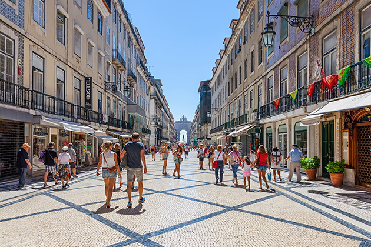
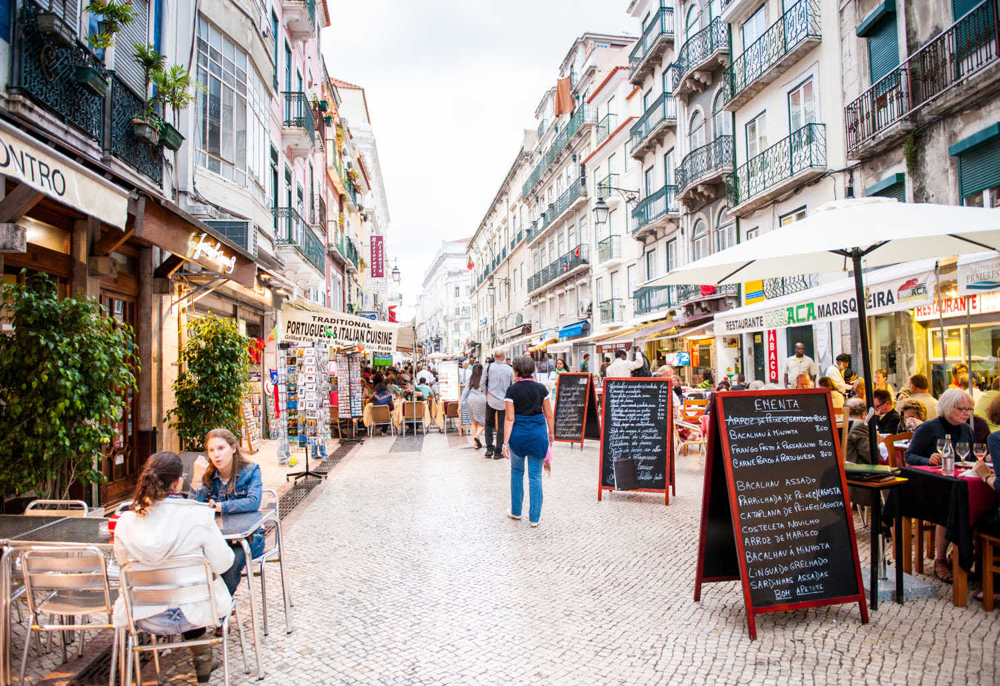
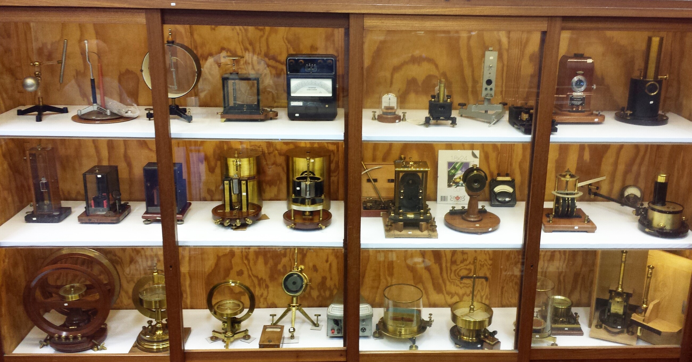
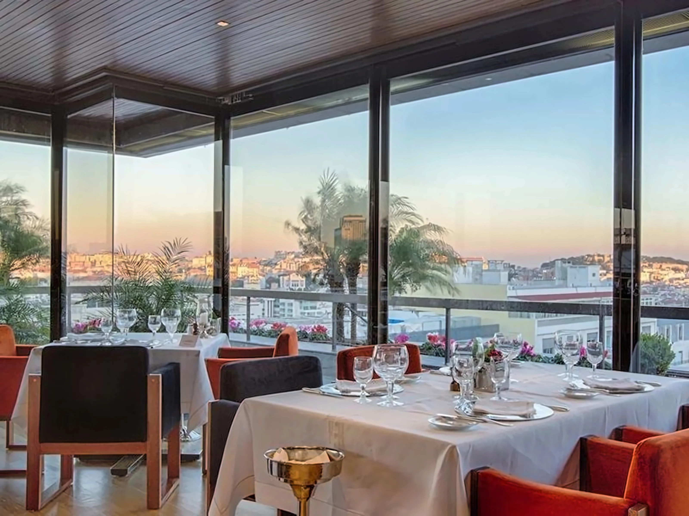

Why Lisbon Stands Out



Lisbon offers a unique combination of accessibility, safety, culture, and technical infrastructure. As one of Europe’s most vibrant capitals, it provides the perfect setting for an international conference such as EME 2028.


Lisbon is served by a major international airport located just minutes from the city center, offering direct connections to Europe, North America, and beyond. The city features modern transport systems, high-quality hotels, and reliable digital infrastructure.



Lisbon is more than a location — it is an experience. By combining technical excellence with cultural richness and outstanding hospitality, the city offers the ideal environment to host a truly memorable and successful EME conference.
Lisbon is ready to welcome the world to EME 2028.